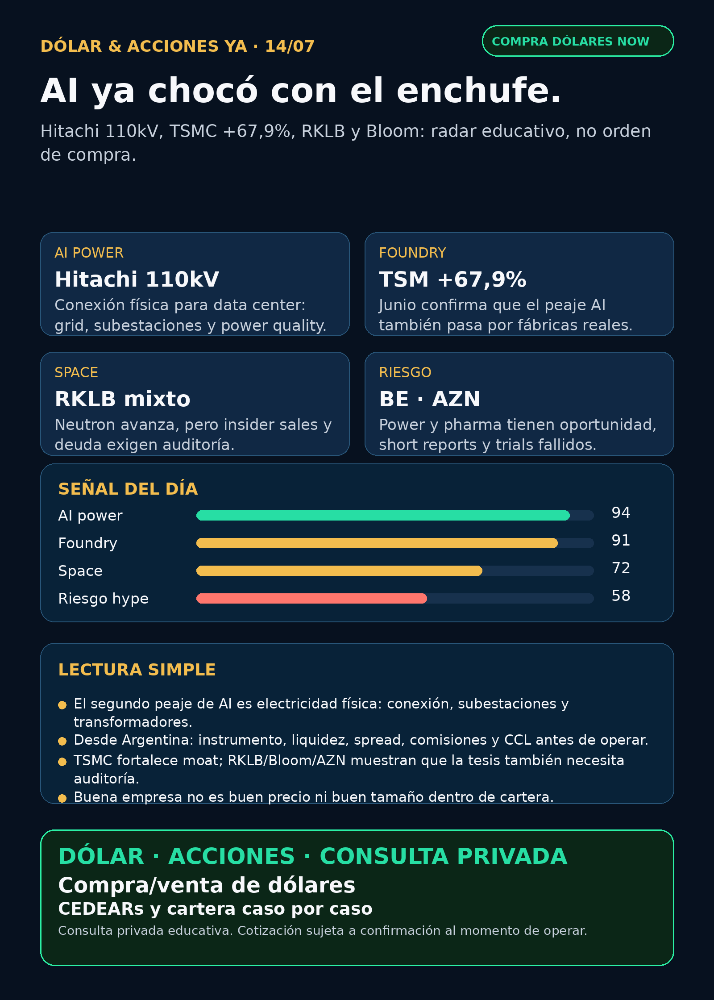

AI ya chocó con el enchufe.
Hitachi 110kV, TSMC +67,9%, Rocket Lab, Bloom y pharma: research educativo para Argentina, no orden de compra.
Texto WhatsApp
Placa del día

Dólar & Acciones YA — 14/07
Fecha de edición: 2026-07-14. Research educativo para Argentina. No es recomendación personalizada de compra o venta.
Lectura simple del día
La tesis de hoy es directa: la inteligencia artificial ya chocó con el enchufe. Durante meses el mercado miró chips, modelos y data centers. Ahora aparece el segundo peaje: conexión eléctrica, subestaciones, transformadores, switchgear, power quality, permisos y capacidad de red.
En criollo: una empresa puede tener GPUs, pero si no tiene energía y conexión física confiable, no hay AI factory. Para alguien en Argentina, además, una buena tesis global no alcanza: hay que separar activo internacional, CEDEAR o instrumento local, liquidez, spread, comisiones, MEP/CCL y tamaño prudente dentro de cartera.
Contexto dólar público al momento del armado: BlueLytics: oficial vendedor ARS 1.509,00; blue vendedor ARS 1.515,00; fecha 2026-07-14T08:45:58.497154-03:00. CriptoYa: MEP AL30 24hs ARS 1.529,16; CCL AL30 24hs ARS 1.582,62; USDT ask ARS 1.570,00. Son fuentes públicas, no broker vivo; para operar se confirma precio, spread, comisiones y disponibilidad en IOL/PPI/broker.
Ordenado por valor educativo y fuerza de señal de radar, no por recomendación de compra.
Tesis central
El mundo AI se está moviendo de “quién tiene el chip” a “quién logra enchufar el data center”. La señal fresca vino de Hitachi Energy: solución de conexión 110kV para un data center en Frankfurt, con mención explícita a demanda de AI y electrificación. Eso valida el carril que Charly marcó: transformadores, subestaciones, conexión de red y tiempos de entrega.
La segunda señal es foundry: TSMC reportó junio con revenue +67,9% interanual. Si la IA crece, alguien tiene que fabricar los chips. El moat físico sigue vivo.
La tercera capa es riesgo: Rocket Lab avanza técnicamente con Neutron pero tiene overhang de ventas de insider; Bloom Energy está en AI power pero con short report/contabilidad para auditar; AstraZeneca mostró que en pharma un Phase III fallido puede pegar aunque la empresa sea grande.
Señales educativas del día
1) AI power / grid connection — Hitachi Energy / Hitachi (6501.T / HTHIY)
- Qué pasó: Hitachi Energy anunció el 13/7 una orden para entregar una solución avanzada de conexión de red para el data center Kauri CAB Digital Infrastructure en Frankfurt.
- Dato clave: conexión dedicada 110kV, diseño compacto y confiable para entorno urbano restringido. El comunicado vincula el proyecto con demanda eléctrica por electrificación y necesidades energéticas de AI.
- Fuente primaria: https://www.hitachienergy.com/news-and-events/press-releases/2026/07/hitachi-energy-to-power-kauri-cab-digital-infrastructure-data-center-in-frankfurt-with-advanced-grid-connection-solution
- Lectura en criollo: no alcanza con NVIDIA. El data center necesita enchufe, borde de red, transmisión/distribución y resiliencia. Ese es un peaje físico de la IA.
- Accionable Argentina: no asumir acceso fácil. 6501.T cotiza en Japón y HTHIY OTC; hay que verificar broker, liquidez y spread. Proxies globales más limpios para mirar pueden ser GEV, Siemens Energy (ENR.DE) o ETFs industriales, siempre con precio/riesgo.
- Estado: señal fortalecida / en radar.
2) Semiconductores / foundry — TSMC (TSM)
- Qué pasó: TSMC presentó 6-K el 13/7 con revenue de junio 2026.
- Dato clave: revenue consolidado de junio aprox. NT$442.680 millones, +6,2% vs mayo y +67,9% vs junio 2025. Enero-junio: NT$2,404 billones, +35,6% interanual.
- Fuente SEC: https://www.sec.gov/Archives/edgar/data/1046179/000104617926000447/tsm-revenue20260713.htm
- Lectura en criollo: si la demanda AI sigue, alguien fabrica esos chips. TSMC sigue siendo una de las llaves físicas del peaje.
- Accionable Argentina: TSM es global y suele tener vías internacionales/locales a verificar, pero antes de ejecutar hay que chequear instrumento, liquidez, spread, CCL/MEP y tamaño de posición.
- Estado: fortalece tesis.
3) Space / aerospace industrial — Rocket Lab (RKLB)
- Qué pasó: fuente secundaria gateada reportó que Rocket Lab completó un full-duration burn del motor AVac de segunda etapa de Neutron. Es avance técnico para el nuevo cohete.
- Riesgo verificado por SEC: Form 4 de Peter Beck muestra ventas por 3.275.779 acciones, valor aprox. USD 286,4 millones, VWAP calculado cerca de USD 87,43, entre 6 y 8/7.
- Fuentes: TradingView/Stocktwits verificado para engine test: https://www.tradingview.com/news/stocktwits:56bdaf3fc094b:0-rklb-stock-rises-overnight-rocket-lab-completes-major-engine-test-ahead-of-neutron-s-first-launch/ ; SEC Form 4 XML: https://www.sec.gov/Archives/edgar/data/1819994/000200101126000109/edgardoc.xml
- Lectura en criollo: avance técnico no elimina riesgo de ejecución, Iridium/deuda, integración ni insider selling.
- Accionable Argentina: señal de seguimiento, no señal automática de compra.
- Estado: tesis técnica fortalecida / vigilar overhang.
4) AI power con red flag — Bloom Energy (BE)
- Qué pasó: Bloom Energy presentó 8-K rechazando un short report de Hunterbrook. La empresa defendió su reporting y su supply de scandium oxide, y dijo tener visibilidad para soportar producción de 25GW anuales de fuel cells.
- Fuente SEC: https://www.sec.gov/Archives/edgar/data/1664703/000162828026047734/be-20260709.htm
- Lectura en criollo: puede ser oportunidad del carril “power para data centers”, pero también exige auditoría dura: 10-K/10-Q, cash conversion, backlog, customer concentration, supply chain y márgenes.
- Accionable Argentina: instrumento local/CEDEAR no confirmado. No vender como ganador limpio.
- Estado: en radar / riesgo elevado.
5) Energía Argentina — YPF (YPF)
- Qué pasó: YPF informó por 6-K recompra de Class XXVII Notes (YMCTO) entre 2 y 8/7.
- Dato: Ps. 5.474.570.617,50, par value USD 3.712.450, precio promedio equivalente a 98,92% del nominal.
- Fuente SEC: https://www.sec.gov/Archives/edgar/data/904851/000155485526001528/MainDocument.htm
- Lectura en criollo: no es catalyst operativo de Vaca Muerta. Es gestión de deuda/capital structure y sirve como recibo de energía local.
- Accionable Argentina: YPF/ADR/CEDEAR/acción local dependen del broker. Recompra de deuda no equivale a compra de acción.
- Estado: vigilar / señal financiera menor.
6) Pharma / salud — AstraZeneca (AZN) + Ionis (IONS)
- Qué pasó: AstraZeneca informó por 6-K que el Phase III CARDIO-TTRansform para Wainua/eplontersen en ATTR-CM no cumplió el endpoint primario de mortalidad cardiovascular + eventos clínicos cardiovasculares recurrentes hasta 140 semanas vs placebo.
- Fuente SEC: https://www.sec.gov/Archives/edgar/data/901832/000165495426006554/a6054l.htm
- Lectura en criollo: en pharma, la fuente importante no es el hype de GLP-1 reciclado; es si el trial pega o no pega. Un ensayo fallido debilita una indicación concreta aunque la empresa siga teniendo otros negocios.
- Accionable Argentina: AZN global; acceso local/CEDEAR a verificar. No extrapolar a todo AZN sin mirar pipeline completo.
- Estado: debilita tesis específica / vigilar.
Watchlist base — seguimiento rápido
- RKLB: avance técnico Neutron/AVac, pero riesgo por Form 4 de Peter Beck, deal Iridium, deuda e integración. En radar, no compra automática.
- NVDA: sin filing nuevo fuerte; señal indirecta por Physical AI con SoftBank/Yaskawa/NVIDIA. Moat estructural sigue en GPU + Cosmos/Omniverse/ecosystem.
- TSM: señal fuerte por revenue de junio +67,9% interanual. Fortalece tesis de foundry.
- PLTR: anunció fecha de resultados Q2 2026 para 3/8 after close. No es catalyst operativo por sí solo; esperar earnings. Fuente: https://investors.palantir.com/news-details/2026/Palantir-Announces-Date-of-Second-Quarter-2026-Earnings-Release-and-Webcast/
- MU: HBM/memory cycle sigue en radar; sin fuente primaria nueva superior hoy.
- GOOGL/GOOG: sin señal primaria nueva fuerte; Waymo/privacy y cloud/TPU siguen en radar estructural.
- AAPL: sin primaria nueva; Apple/Broadcom custom silicon queda como tesis previa, no novedad de hoy.
- HOOD: agentic crypto trading sigue como caso educativo vigente; hoy sin primaria nueva mejor.
- TSLA: RSS trae FSD/robotaxi secundario; sin primaria nueva de negocio mejor que Q2 deliveries/storage ya indexado.
- ASML: esperar earnings/IR; no elevar previews.
- Gold / GLD / GOLD / B: instrumento ambiguo. No hablar de precio/tesis sin saber cuál es.
- RVI: sponsor sales confirmadas por SEC; falta NAV, holdings, premium/descuento, volumen y acceso Argentina/USA.
- CBRS: sin filing nuevo; mantener radar por OpenAI/AWS/customer concentration ya indexado.
Energía y AI power
- Grid/equipamiento: Hitachi Energy es la señal primaria del día. Carril: conexión de red, subestaciones, power quality, entorno urbano y data centers.
- Transformadores / power hardware Corea: Hyosung, HD Hyundai Electric, LS Electric y LS Electric + Infineon siguen en radar alto, pero falta primaria limpia diaria para algunas señales. Corea/OTC no es fácil para Argentina.
- GE Vernova (GEV): proxy público más limpio del carril power/grid, pero hoy sin primaria nueva mejor que Hitachi. Mirar precio, múltiplos y ejecución antes de cualquier análisis humano.
- Siemens Energy (ENR.DE), Hitachi (6501.T/HTHIY), HD Hyundai Electric (267260.KS), Hyosung (298040.KS): radar global; acceso Argentina pendiente.
- Argentina: YPF con recompra de deuda verificada. PAMP, TGS, CEPU, VIST revisadas sin señal externa nueva fuerte para titular.
Pharma / salud
- AZN/IONS Wainua: señal negativa limpia y verificable.
- Novo Nordisk (NVO): 6-K actualiza buyback de hasta DKK 15.000 millones; entre 6 y 10/7 compró 975.000 B shares adicionales. Es capital return, no nuevo catalyst clínico GLP-1. Fuente: https://www.sec.gov/Archives/edgar/data/353278/000117184326004596/f6k_071326.htm
- Eli Lilly / orforglipron / Foundayo: titulares de “FDA approved weight-loss pill” siguen sospechosos/reciclados. No publicar como novedad sin fuente primaria nueva.
- VERA / TRUTAKNA: aprobación real ya indexada; hoy no hay señal clínica nueva superior.
Radar amplio fuera de watchlist
- Physical AI / robotics: SoftBank + Yaskawa + NVIDIA mostraron workflow de robots físicos con data loops, synthetic data, Cosmos, Omniverse y deployment. Fuente: https://www.thefastmode.com/technology-solutions/49576-softbank-yaskawa-demonstrate-physical-ai-development-using-ai-data-center-gpu-cloud. Es tesis educativa, no ticker simple.
- Defensa / guerra física / aerospace industrial: AVAV, GE, RTX, LMT, NOC, GD, HWM, KTOS, BA, ITA/XAR revisados. Sin primaria nueva mejor que AVAV Domestic Shield ya indexado. GE Aerospace tuvo titulares secundarios, pero sin primaria nueva limpia hoy.
- Space / orbital AI: SPCX, SpaceX, Starlink, RKLB y wrappers revisados. Sin nuevo SEC material para SpaceX/SPCX hoy; no convertir opinión o price targets en verdad.
- Autonomous mobility / physical AI: Tesla/Waymo/Uber/Zoox/Joby revisados; sin primaria nueva fuerte. Mantener riesgo regulatorio/privacidad.
- Crypto gobernado / agentic finance: HOOD sigue como caso educativo de agentes crypto con cuentas dedicadas y MCP; sin primaria nueva hoy. No token casino.
- Private wrappers: RVI vendió sponsor por Form 4; DXYZ, ARKVX, AGIX, XOVR, VCX, Forge sin evidencia fresca suficiente. Wrappers privados no son acceso limpio: mirar NAV, premium, holdings, liquidez y spread.
Red flags / hype para ignorar hoy
- “FDA aprobó una pastilla GLP-1” si no viene de FDA/company/openFDA actual: no usar como catalyst fresco.
- “AI power = comprar cualquier empresa de energía”: no. Hay que auditar contratos, backlog, cash conversion, deuda, supply chain y precio.
- “Rocket Lab sube por épica espacial”: no alcanza; mirar insider sales, deuda, Iridium, ejecución y liquidez.
- “RVI/DXYZ te dan SpaceX/OpenAI limpio”: no sin NAV, premium/descuento, holdings, restricciones y spread.
- “Gold/GLD/GOLD/B”: ambiguo hasta que sepamos si es ETF de oro, Barrick, otro ticker o caja.
Qué mirar después
1. Hitachi/Siemens Energy/GEV/Hyundai/Hyosung: instrumento real, liquidez, spread y broker para Argentina/USA.
2. TSMC: mantener revenue mensual y capex como termómetro físico de AI.
3. RKLB: confirmación primaria del engine test si aparece, avances Neutron e impacto Iridium/deuda.
4. Bloom Energy: leer 10-K/10-Q y auditar short report vs respuesta company.
5. Pharma: separar trial real/FDA label de titulares reciclados.
6. Dólar/MEP/CCL: confirmar cotización viva en broker antes de cualquier decisión operativa.
CTA privado
Si querés comprar o vender dólares, mirar CEDEARs/acciones o pensar una estrategia financiera más personalizada, escribime por privado y lo vemos caso por caso. Cotización y condiciones sujetas a confirmación al momento de operar.
Disclaimer
Esto es research educativo para decisión humana. No es asesoramiento financiero personalizado ni recomendación de compra/venta. Buena empresa no es lo mismo que buen precio, buen instrumento local ni buen tamaño dentro de una cartera.